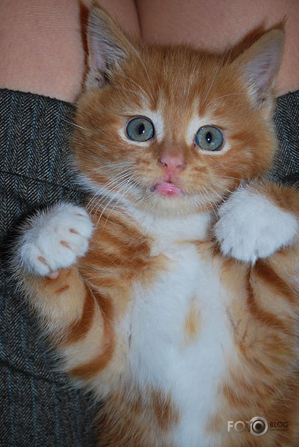

Mājas kaķis jeb kaķis (Felis silvestris catus), arī domesticētais kaķis ir mazs, plēsīgs kaķu dzimtas zīdītājs, kas, apmēram, pirms 12 000 gadiem pieradināts Mezopotāmijas reģionā.[1] Kaķis ir ļoti populārs mājdzīvnieks, jo palīdz cilvēkam cīnīties ar dažādiem kaitēkļiem, piemēram, pelēm, čūskām un pat skorpioniem. Mājas kaķa tēviņus dēvē par runčiem, bet mātītes — par kaķenēm.
Pieauguša kaķa vidējais garums no degungala līdz astes galam ir 50 centimetri. Kaķenes ir mazākas par runčiem, bet tas galvenokārt ir atkarīgs no šķirnes. Saskaņā ar Ginesa rekordu grāmatu, vislielākais kaķa garums ir sasniedzis 121,9 centimetrus.[3] Pasaulē garākā reģistrētā mājas kaķa aste ir bijusi 44,66 cm gara. Atšķirībā no suņiem, kaķiem nav punduršķirņu. Skausta augstums kaķiem parasti ir no 23 līdz 25 centimetriem.
Kaķi parasti sver no 2,5 līdz 7 kg, lai gan dažu šķirņu pārstāvji, piemēram, meinkūni, sver ap 11,3 kg. Ir reģistrēti pat 23 kg smagi kaķi, bet šie gadījumi ir izņēmumi. Liels kaķa svars ir sliktas veselības rādītājs un tas parasti ir arī pārbarošanas rezultāts. Pretstatā, vieglākie pieaugušie kaķi sver mazāk nekā 1,8 kg.
Kaķu mūža ilgums vidēji ir no 15 līdz 20 gadiem, bet ir reģistrēti gadījumi, kad kaķis nodzīvo arī 36 gadus. Kaķi dzīvo ilgāk, ja tos nelaiž ārā uz ielas. Tādā veidā tie tiek pasargāti no dažādām iespējamām traumām un ievainojumiem. Arī kastrētie un sterilizētie kaķi dzīvo salīdzinoši ilgāk. Toties kastrētie kaķi daudz biežāk cieš no citām hroniskām slimībām, piemēram, no aptaukošanās. Pāragra kastrācija (agrāk par septiņām nedēļām) var izsaukt urīnorgānu akmeņu slimības attīstību. Kaķi, kuri nav nevienam vajadzīgi, mūsdienās pilsētā dzīvo tikai aptuveni divus gadus, lai gan ir fiksēts gadījums, ka klaiņojošais kaķis ir nodzīvojis pat 19 gadus. Pirmie divi kaķa nodzīvotie gadi relatīvi atbilst 24 cilvēka nodzīvotajiem gadiem. Katrs nākamais nodzīvotais gads atbilst vairs tikai četriem cilvēka nodzīvotajiem gadiem, respektīvi, 20 gadus vecs kaķis atbilst 100 gadus vecam cilvēkam.
Pieauguša kaķa ķermeņa temperatūra svārstās no 38 līdz 39,5 °C, bet kaķēniem tā parasti ir mazliet augstāka. Sirds pukstu biežums pieaugušiem kaķiem mainās atkarībā no fiziskās un psihiskās aktivitātes un tas svārstās no 120 līdz 220 sitieniem minūtē.
| Liks | Pirmdiena | Otrdiena | Trešdiena | Ceturdiena | Piekdiena |
|---|---|---|---|---|---|
| 08:00-08:40 | 7.d |